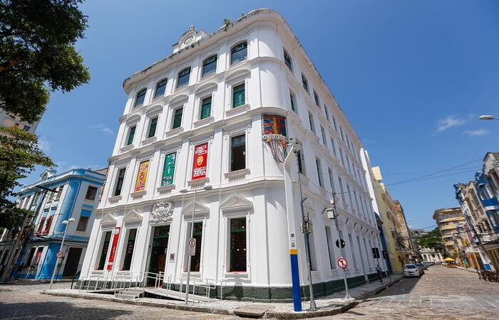
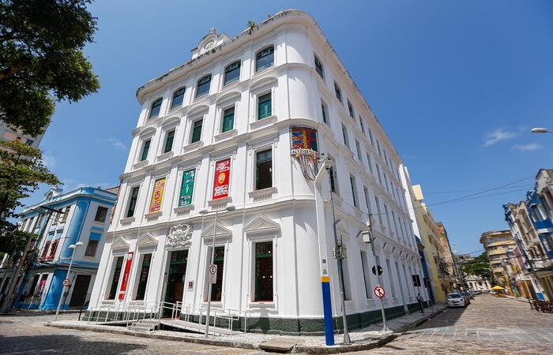

Paço do Frevo
O Paço do Frevo é um centro de referência de ações, projetos e atividades de documentação, transmissão, salvaguarda e valorização de uma das principais tradições culturais brasileiras, reconhecida como Patrimônio Imaterial da Humanidade pela Unesco: o frevo. Um lugar para estudar, criar, experimentar e vivenciar o rico universo de histórias, personalidades, memórias e linguagens artísticas. Localizado no Bairro do Recife, o Paço tem curadoria assinada por Bia Lessa. Além de se valer de conteúdos e linguagens diversas para manter vivo o ritmo que embalou a formação da identidade cultural recifense, o equipamento promove oficinas e apresentações musicais regulares em quatro pavimentos de atividades, que oferecem aos visitantes a possibilidade de experimentar o Carnaval recifense durante todo o ano. O imóvel onde está instalado o museu é um capítulo à parte na rica história do equipamento, tendo abrigado até 1973 a Western Telegraph Company, empresa pioneira na implantação do telégrafo no Brasil. Hoje, ele faz parte do complexo turístico das cidades de Recife e Olinda e é tombado pelo IPHAN desde 1998. O museu Paço é uma iniciativa da Prefeitura do Recife, com realização da Fundação Roberto Marinho e gestão do Instituto de Desenvolvimento e Gestão - IDG. O projeto conta com o patrocínio do Banco Nacional de Desenvolvimento Econômico e Social (BNDES), da Companhia Energética de Pernambuco (Celpe), do Governo do Estado de Pernambuco, por meio de sua Secretaria de Turismo e da Empresa de Turismo de Pernambuco (Empetur), do Instituto Camargo Corrêa, do Instituto Votorantim, do Itaú, da Rede Globo e apoio do Instituto do Patrimônio Histórico e Artístico Nacional (IPHAN) e do Ministério da Cultura, por meio da Lei de Incentivo à Cultura.
 
